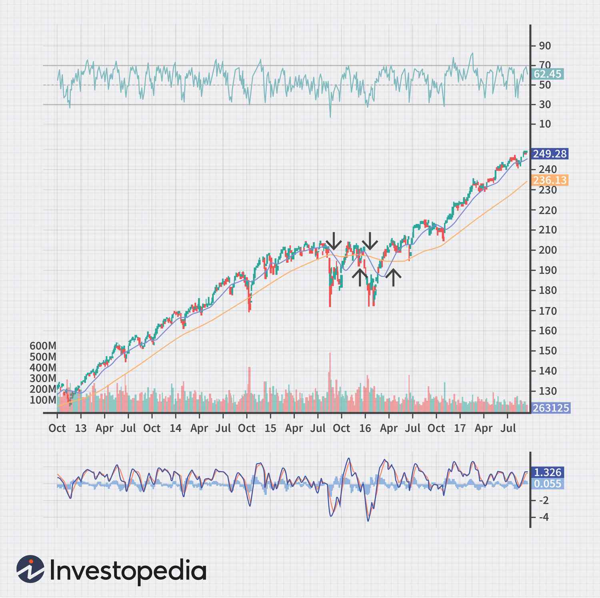

Data and Information
Data - refers to raw, unorganized facts or figures that are collected but not yet processed.
Examples of data include individual numbers, text, or symbols (e.g.,
"5000" without any context)
Information - is what you get when data is processed, organized, and interpreted,
giving it context and meaning.
For instance, if "5000" is processed to indicate "5000 feet in altitude," it becomes information.
Data
- Data is typically unstructured (e.g., raw numbers or text)
- Data does not rely on information
- Data is collected and stored for potential use
- Data is comprised of the basic, unrefined, and generally unfiltered information.
Information
- Information is structured and organized (e.g., a report or chart)
- Information depends on data
- Information is used to provide insights or make decisions
- Information is much more refined data… that has evolved to the point of being useful for
some form of analysis
Information System (IS)
- is a coordinated set of components designed to collect, store, process, and deliver
data in a useful form for decision-making and control in organizations.
- simply, is a combination of technology (hardware and software), people, and
processes that work together to collect, store, manage, and process data to create
useful information for decision-making in organizations
Purpose: The primary purpose of information systems is to enhance decision-making, improve
operational efficiency, and facilitate the strategic goals of an organization.
Usage: Information system use different support systems to help organizations
with their specific decision-making and day-to-day tasks.
Different Types of Support Systems in
Information Systems
- Transaction Processing Systems (TPS)
- Management Information Systems (MIS)
- Decision Support Systems (DSS)
- Executive Support Systems (ESS)
- Expert Systems
Transaction Processing Systems (TPS)
- these systems handle day-to-day business transactions such as payroll
processing, inventory tracking, and sales data.
- is primarily used at the operational level to record routine transactions
and provide detailed reports
Some examples of TPS systems: ATM (Automated Teller Machines), Order processing systems, Airline seat reservation system
Management Information Systems (MIS)
- MIS compiles data from TPS and processes it into reports that help middle
management monitor and control ongoing activities.
- it supports semi-structured decision-making, such as inventory
management and budgeting.
Some example of MIS systems: Sales Management Systems, Human Resource Management Systems (HRMS), Inventory Control Systems, Financial Management Systems, Customer Relationship Management (CRM) Systems
Decision Support Systems (DSS)
- DSS is used for more complex, non-routine decision-making.
- It provides analytical tools, "what-if" scenarios, and simulations to help
managers make decisions when faced with uncertainty.
DSS supports strategic planning and problem-solving
Some example of DSS systems: Financial Planning Systems, Supply Chain Management Systems, Healthcare Diagnosis Systems, Marketing Decision Systems, Loan Approval Systems

Executive Support Systems (ESS)
- These are used by top-level executives to make high-level strategic decisions.
- ESS consolidates data from various sources (internal and external) and
presents it in an easy-to-understand format, such as dashboards with key
performance indicators (KPIs)
Some example of ESS systems: Dashboard Systems, Financial Forecasting Systems, Business Intelligence Systems, Strategic Planning Systems, Market Analysis Systems
Expert Systems
- These systems use artificial intelligence to mimic human expertise in specific domains.
- They help users make decisions by providing advice based on preprogrammed rules and knowledge, such as in medical diagnosis or legal
advisory systems
Some example of Expert systems: MYCIN, DENDRAL, XCON (eXpert CONfigurer), Prolog-based Systems, CLIPS (C Language Integrated Production System)